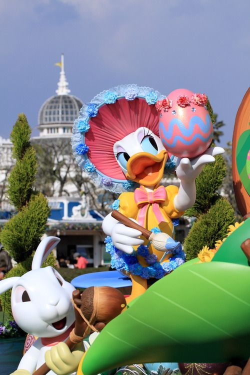

04.04.2021
Wielkanoc
Z okazji Wielkanocy w parku rozrywki Tokyo Disneyland w Japonii została zorganizowana specjalna świąteczna parada. Mickey i jego przyjaciele z disneyowskich filmów będą uczestniczyć w widowisku, ubrani w królicze uszy i wielkanocne ozdoby. Z tej okazji zostały stworzone piękne pisankowe figurki ulubionych postaci z różnych filmów. Zostały rozstawione w różnych miejscach w całym Disneylandzie, wśród których możemy podziwiać podobizny Kaczora Donalda, Myszki Mickey oraz krasnoludków czy przyjaciół Alicji z Krainy Czarów! Ale to nie wszystko, atrakcji jest cała masa! Koniecznie zobaczcie!
Podczas trwania imprezy, raz dziennie przez całe 40 minut, wszyscy zgromadzeni będą mogli wziąć udział w wielkim wyścigu po nagrody! Ich zadaniem będzie znaleźć małe bajkowe pisanki, a kto znajdzie ich najwięcej wygra specjalną niespodziankę. Jajka są różnej wielkości i są ukryte w przeróżnych miejscach w całym parku, a więc jest wiele poziomów trudności i sposobów na ich odnalezienie. Każdy z uczestników po zgłoszeniu otrzymuje mapę i wskazówki, dzięki którym szukanie będzie nieco łatwiejsze, ale na pewno również zabawniejsze! Ta wielkanocna impreza odbywa się niestety jedynie w Japonii (raz dziennie każdego dnia) od 25 marca aż do 15 czerwca 2016.